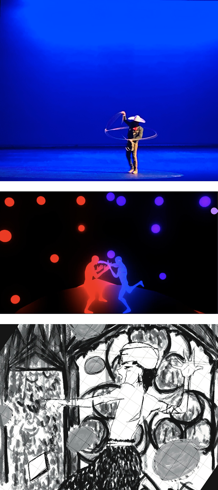

Multimedia
1
Challenge
UI/UX design increasingly requires fluency in motion, narrative, and visual communication — skills that aren’t always taught alongside traditional product design coursework.
2
Solution
Through UVA coursework and personal projects, I built experience in 3D animation and MEL scripting in Maya, 2D illustration in Procreate, narrative screenwriting, and music production in Rekordbox and Ableton — deliberately choosing projects that pushed me outside purely screen-based design.
3
Impact
Working across these mediums has fundamentally changed how I think about interaction design — giving me a storyteller’s instinct for pacing, contrast, and what makes an experience feel intentional rather than assembled.